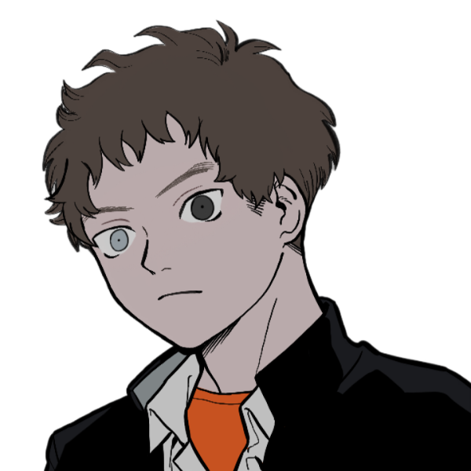

GM:めい
メインログ /
雑談ログ
キャラシート
PC1：クリスタ (キャラシート) PL：ふろずん
PC2：深月藍歌 (キャラシート) PL：雅
PC3：二階堂新 (キャラシート) PL：LISP
PC4：浜崇晃 (キャラシート) PL：タロベー
目次
■ステージ紹介
千葉県凪宮市
■プリプレイ
HO&PC紹介
■オープニングフェイズ
01 UGN凪宮支部
02 彷徨う人形
ステージ紹介
■ステージ：千葉県凪宮市
凪宮（ナギミヤ）市は千葉県の南東部に位置する観光都市である。
総人口は約4万人。美しい海に面し、郊外には山と森が広がる自然豊かな町になっている。
龍姫川（リュウキガワ）という川が凪宮市を北と南に分けるように流れ、太平洋に注いでいる。
年間を通して温暖な気候に恵まれており、冬はめったに雪が降らず、夏は真夏日日数が少ない避暑地でもある。
そのため夏は避暑地に、冬には避寒地として多くの観光客が訪れている。
・UGN凪宮支部
凪宮市のUGN支部。
北東の別荘地帯の外れにある岬に建てられた屋敷を拠点としている。
支部は一年前から構えられているが、この支部の存在は何故かUGN内でも秘匿されており、ごく一部のUGN関係者しかその存在を知らない。
そのためこの町に住むUGNに保護されているオーヴァードやUGNイリーガルは、UGN日本支部か関東支部の世話になっている場合が多い。
・和辰巳学園（ワタツミガクエン）
共学の公立中高一貫校。
全校生徒数は約700人。学力は全国平均程度。
文化祭や体育祭、部活動などは全て中等部高等部合同で行われている。
・凪宮グランドホテル
凪宮市に本社を置く、ホテル経営・飲食店経営を手掛ける大企業。
凪宮グランドホテルが経営するリゾートホテルや旅館は凪宮市に数多く点在する。
本店であるグランドホテルは比奈浜海岸沿いに建っており、海が眼前に広がる高級感のあるリゾートホテルとして有名。
・凪宮駅
海沿いに走るJRの鉄道駅。
東出口からは比奈浜海岸に、西出口からは夕凪通りに向かえる。
南出口のバスターミナルには、凪宮アクアパークの無料送迎バスが往復している。
・夕凪通り
凪宮駅から西に向かって伸びる、凪宮市で最も長い商店通り。
通り全体に活気があり、ドラッグストアやファーストフードのチェーン店、喫茶店などが建ち並び、昔ながらの個人商店も充実している。
・比奈浜海岸
凪宮市内最大の海水浴場、比奈浜海水浴場が存在する海岸。
海辺にはヤシ並木と遊歩道が続き、南国ムードに溢れている。
海水浴場が開いている夏の季節には、家族連れを中心に多くの海水浴客で賑わっている。
・凪宮アクアパーク
大規模な総合海洋レジャー施設。
20年前に開園し、海水浴程度の観光地だった凪宮市を通年リゾート地に生まれ変わらせるきっかけとなった。
シャチやイルカの迫力あるパフォーマンスショーが人気。
・凪宮漁港
凪宮市南東に位置する太平洋に面した漁港。
漁港には船舶係留施設が整備され、マリンスポーツやクルージングが盛んである。
・藍羽公園（アイバコウエン）
凪宮市で最も広い自然公園。
桜の木が多く植えられているため、春には花見客がよく集まる。
・深滝山（ミタキヤマ）
凪宮市北部、町の郊外にそびえ立つ山。標高370m。
整備されたハイキングコースがあり、四季折々の自然の景色を楽しみに登山客が訪れている。
プリプレイ
GM :
ではPCの紹介から始めていきます
GM :
まずはPC1！お願いします！
クリスタ :
ワタクシが一番！ よくってよ！！

クリスタ :
クリスタ=フォン=グラスマン！ ドイツの名家の御嬢様ですわ！！
クリスタ :
貴族はその立場に相応しい能力を身に着けていなければならない、という考えの下、自己研鑽を続けている努力家でもありますの！！
クリスタ :
特に美の探求に余念がなくて『世界で一番の"美"を手に入れる』と豪語してますわ！
クリスタ :
そして『至高の美女』として認められるためにモデル活動等も行なっておりまして、同郷の有名モデルだった「レナ・エーデルシュタイン」とはライバル関係でしたの！
(共演した有名雑誌の表紙を奪われ続けた、という一方通行のライバル意識である)
クリスタ :
戦闘では【Dロイス：秘密兵器】で取得している遺産擬きを駆使して戦いますわ！
クリスタ :
RC技能で≪インビジブルハンド≫による範囲攻撃を行なう他、装甲諸々のおかげで合計58点のダメージ軽減ができますの！
クリスタ :
もはや護衛なんてジャマになる程の戦闘能力の高さですわね！
クリスタ :
以前の参加卓では、個性豊かなＰＣと偽装家族として数日を過ごしたのですが……今度は不良ＰＣに囲まれていますわ！？
クリスタ :
しかも、またもUGN支部がない地域に出向いてますわ！？！？
クリスタ :
そんなカンジでＰＣは他ＰＣを眺めて眉を顰めてそうですが、ＰＬは高慢な令嬢でみんなと絡むのを楽しみにしてます！！
クリスタ :
以上！！！！
GM :
ありがと！いやほんまやんまた支部が無い街に来てる！
GM :
もうそういう縁なのよ
クリスタ :
ついてねえですわ～～～～！！！！
GM :
どんまいですわ～！
■PC1ハンドアウト
ロイス：シア
推奨感情 P：尽力/N：憐憫
キミはUGNに所属する、あるいは協力関係にあるオーヴァードだ。
ある日の夜、キミはシアという人形のレネゲイドビーイングに出会った。
UGN凪宮支部に保護されているシアは、行方不明になった支部長や支部員達を捜しているらしい。
キミはこの緊急事態を見過ごすことが出来ず、凪宮支部のメンバーを捜す手伝いをすることにした。
GM :
それはさておき、クリスタちゃんのOPではヒロインのシアと出会います。
GM :
行方不明になった支部員達を捜している健気な子なので、なんやかんや話聞いて最終的に協力してあげてください
クリスタ :
このワタクシが！ ボランティアの人形保護！！ 仕方ないですわね！ 御嬢様でもPC1が出来るところを見せつけていきますわよ！！
GM :
頑張って下さいまし～！
GM :
では次いきましょ！PC2、お願いします。
深月藍歌 :
はーい！私よ。
深月藍歌 :
ちょっと演出風に！

深月藍歌 :
…これは、ある事件後に記録されたFHのログである。
深月藍歌が所属しているセルの室内で、FHエージェントと面談している様子が収められている。
深月藍歌 :
「は？名前…？わざわざそんなことまで聞くのね……」
深月藍歌 :
嫌味を含んだ溜息と共に、彼女は口を開く。
深月藍歌 :
「"アン・バースデー"の藍歌よ。これで良い？」
深月藍歌 :
「…あ？苗字？……そっちは別にいいでしょ。嫌いだし。」
深月藍歌 :
「私の近況？まあ…情報収集に混じったり、軽くトレーニングしたり、勉強教えたり……かしら。」
深月藍歌 :
「いや、私の身体を乗っ取られたことがあったりしたわね……。あれは最悪。二度とごめんよ。」
深月藍歌 :
「アンタ達からしたら、"賢者の石"の適合者がただの偏屈女に戻ったのが残念だったかしら？ご愁傷様ね。」
手をヒラヒラ振って皮肉を口走る。
深月藍歌 :
「……誕生日のUGNエージェントを襲う？あー、あれは……」
深月藍歌 :
「───つまらないから、止めたわ。」
深月藍歌 :
しばしの間を置いた後にそう答える。
深月藍歌 :
「幸せそうなヤツが妬ましいのは変わらないわ。気が向いたらまたやるかもしれないわね。」
深月藍歌 :
嘘を交えて、茶を濁す。彼女がUGNエージェントを襲うことは恐らくないだろう。
深月藍歌 :
「……もう良いかしら、私にもプライベートってものがあるから」
深月藍歌 :
そうして、彼女は足早にその場から退出していったのであった。
深月藍歌 :
とまあこんな感じで、ツンケンした態度のFH系女の子（UGNにダブルクロス予定）です！
深月藍歌 :
今回は凪宮市に遊びにくる形で参戦！よろしくお願いします！
GM :
アンバちゃん！PLが使いたいけどHO的に無理だなって思ってたのにGMが使ってもいけるよって言ってきて参戦したアンバちゃんだ！
深月藍歌 :
イエイ！GMが許可してくれたおかげで参戦できました。ありがとうありがとう……
GM :
どういたしまして！危うい立場だけど、UGNに何とか協力出来る状態の子だしね
■PC2ハンドアウト
ロイス：ヴァニタス
推奨感情 P：執着/N：恐怖
キミはUGNに所属する、あるいは協力関係にあるオーヴァードだ。
ある日の夕方、キミはヴァニタスという人形のレネゲイドビーイングの襲撃を受けた。
ヴァニタスが使う《ワーディング》は異質で、キミは今まで感じたことの無い程の死の恐怖を覚えてしまう。
このレネゲイドビーイングをこのまま放っておくわけにはいかない──そう感じたキミは、ヴァニタスを倒す決意をする。
GM :
さて、藍歌ちゃんのOPではヴァニタスに遭遇します。
GM :
未知のワーディングを使ってきたり、襲い掛かってくるそうなので頑張って対処してください！
深月藍歌 :
恐ろしいねえ…でも人形程度に負けるアンバちゃんじゃない！！（フラグ）
GM :
果たしてフラグは回収されるのか折られるのか！楽しみにしていきましょう…
GM :
では次！PC3、お願いします。
二階堂 新 :
いくぞいくぞ！！

二階堂 新 :
”スターマイン”二階堂新！ FHに誘拐されて特殊な改造をされた経歴持ちのイリーガル！
二階堂 新 :
東京の悪の巣窟・湾岸地区ではちょっと知られたお洒落番長だ！
二階堂 新 :
といってもそのセンスは独特。普段からファッションでメイド服とかを着てる、街で見かけたらあんまりお関わりあいになりたくないタイプの男！
二階堂 新 :
中学時代は学校のアタマを張ってた札付きの不良だけど、高校はちゃんと通うって友達と約束したから今のところ大きな問題を起こしたりはしていない。優等生だぜぇ～
二階堂 新 :
が、自慢の衣装を馬鹿にされたらプッツンしたりしなかったりするかもしれない！
二階堂 新 :
戦闘は、突っ込んでって、自爆する！ 以上！
二階堂 新 :
この街のワルどもをお洒落パワーでどんどん爆発させていくぞー！！ そんな感じです！
GM :
芸術は爆発だって昔の偉い人も言ってたからなぁ！よろしくなぁ！
GM :
どんな立ち絵なんだろうって気になってたけど、悪そうな顔してるのに可愛くて良いね…
■PC3ハンドアウト
ロイス：燈台透
推奨感情 P：友情/N：不安
キミはUGNに所属する、あるいは協力関係にあるオーヴァードだ。
数ヵ月前、キミはとある任務がきっかけで、UGNのエージェント“ソウルイーター”燈台透（トウダイトオル）と友人になった。
その透から一週間前、「大事な話があるので、一週間後に自分の別荘に来て欲しい」とキミは頼まれる。
そして約束された日になり、キミは透の待つ別荘へと向かうことにした。
GM :
そして新くんのOPなのですが、HOロイスの燈台透と出会う回想シーンから始まります
GM :
そこから現在に戻って支部へ向かうぞって感じだと思ってくださいな！
二階堂 新 :
向かうぞ！（爆風で飛んでいく
GM :
目立ちすぎで笑っちゃった、爆風で飛んでも良いけどばれないようにしたって…！
二階堂 新 :
努力はします！（壁抜け（爆破））
GM :
努力するなら…いいか！（？） まあでもそれくらいするのは緊急事態な時でしょう、多分
GM :
では最後！PC4、お願いします。
浜 崇晃 :
ウス‼︎いきます！

浜 崇晃 :
17歳、浜崇晃。高校2年。
不良の半機械化兵。
浜 崇晃 :
中学時代、友人のいじめ現場に遭遇。怒りのまま主犯と思わしき生徒に殴りかかるも、崇晃を知る友人は主犯を庇い死亡。
浜 崇晃 :
覚醒と同時に幼少時からの友人、鈴木太一(HO4)の命を奪ってしまう。
浜 崇晃 :
イジメに気付けず、友人を殺してしまった自分のことも憎けりゃそんな力を持たせてきたレネゲイドウイルス、そんなものを受容する世界も憎い。
浜 崇晃 :
この世は不条理で力が全て(＝クソッタレ)なのだとわかった今、大事な人達(HO4や母、良くしてくれたクラスメイト達)の生活を守るため、積極的に任務に参加している。
浜 崇晃 :
ブラックドッグのピュアブリードで白兵型！主力は両腕に埋め込んだパイルバンカーで、攻撃力は高くないものの詰んだ固定値と終盤のバリアクラッカー(装甲&防御無視)で地道にお役に立てればと思います！！
浜 崇晃 :
以上です！
GM :
うわあなんだこの重い過去は…でもこれHOのせいなんよな！
GM :
HOロイス：殺した相手とかいうふわっとしたやつなのに細かく作ってくれてとても感謝感謝…！
浜 崇晃 :
実は初めて罪を犯したPCをやるので張り切ってます！頑張るぞ〜！
GM :
がんばれ～！
■PC4ハンドアウト
ロイス：任意（殺した相手）
推奨感情 P：執着/N：悔悟
キミはUGNに所属する、あるいは協力関係にあるオーヴァードだ。
キミはかつて、自身のレネゲイドの力で殺した者がいる（その対象はFHエージェントやジャーム等の敵でも、肉親や友人等の大切な者でも自由に決めて良い）。
その相手は今でもキミの心の深い場所に根差しており、決して忘れることの出来ない存在だ。
そんなキミのもとに、顔なじみのUGN連絡員“眠り姫”茨木彩純（イバラキアスミ）が現れた。
行方不明になったUGN凪宮支部のメンバーの捜索任務を彩純から依頼されたキミは、UGN凪宮支部へと向かうことになった。
GM :
さて、崇晃くんのＯＰでは、ＨＯロイスではないですがＵＧＮの連絡員のお姉さんと会話することになります。
GM :
そこで依頼を受けて、支部へ向かうぞ～って感じですね。出発した後もちょっと色々展開があったりすると思っていてください！
浜 崇晃 :
なるほど！了解です💪
GM :
では、PCの紹介はそんなところで！
GM :
これからメインプレイを始めて行きます。よろしくおねがいします！
深月藍歌 :
よろしくおねがいします！！
クリスタ :
よろしくおねがいしますわ！！
浜 崇晃 :
よろしくお願いします！！
二階堂 新 :
よろしくお願いしますわ！
メインプレイ
シーン1 UGN凪宮支部
GM :
UGN凪宮支部。
それは千葉県南東部・凪宮市──美しい海と山に囲まれた、自然豊かな観光都市に構えられたUGN支部だ。
GM :
この支部はある理由から、UGN内でも秘匿されている。
その存在を把握しているのは、中枢評議会とごく一部のUGN本部エージェントのみ……。
日本に位置していながら、あのUGN日本支部支部長“リヴァイアサン”霧谷雄吾ですら知らされていないのだという。
GM :
そんな秘密の支部は、支部長を務める燈台透の別荘である、北東の岬に建てられた洋館を拠点にしていた。
支部員総数は透を合わせて四人。
そしてもう一人、少し変わった少女が所属していた……。
UGN凪宮支部

シア :
「お……お父様……！」
GM :
四月上旬、ある日の夜のこと。
透き通った女性の声が支部長・燈台透を呼ぶ。
支部長室に静かに響いたその声に、透は仕事の手を止めて振り返った。

燈台透 :
「どうしたんだい？シア」
GM :
シアと呼ばれたのは、白い帽子を被り、ドレスを着た一人の少女だ。
しかし、彼女は人間では無い。
シアは人形のレネゲイドビーイングだった。
人形ではあるがその表情はまるで人間と変わりなく、青い瞳には確かな生気が感じられる。
もしも彼女の体長が50cm程のサイズ感でなければ、きっと誰もが人間だと思うことだろう。
シア :
「あの……えっと……その……」
GM :
シアは口籠りながら、透を上目遣いに見上げる。
燈台透 :
「……あぁ、そうか」 それだけで何を求めているのかを察し
燈台透 :
「おいで、シア」 仕事の手を止め、シアに手を伸ばす
シア :
「……！はいっ！」 ぱぁっと花が開いたように笑顔になる
GM :
透はシアを抱きかかえると、自分の膝の上に乗せた。
シア :
「えへへ……」 髪を撫でられ、心地良さそうに微笑む
燈台透 :
「……何かあったのかい？シア」
シア :
「え……」
燈台透 :
「君がこんな風に甘えて来るなんて珍しいからさ」
燈台透 :
「いつもは僕が作業しているときは、遠慮して声もかけてこないだろう？」
シア :
「そ、それは、ご迷惑になると思って……」
燈台透 :
「シアなら迷惑にも邪魔にもならないよ」
シア :
「う、あぅ……」
燈台透 :
「……それで、どうしたの？何かあるなら言ってごらん」
シア :
「こ、この後、封印の確認に……行かれるのですよね……？」
GM :
──凪宮支部の地下室には、一体のジャームが封印されている。
そのジャームは非常に強力であり、いつ封印を破って目覚めるか分からない。
そのため、透は定期的に封印の確認や補強を行う必要があった。
燈台透 :
「あぁ、そうだよ。それがどうかしたのかな」
シア :
「……その……」
シア :
「今日は、何だか……嫌な予感が、するんです……」
シア :
「じ、自分でも、上手く言えないんですけど……」
GM :
人形に鼓動する心臓は無いが、シアは不安そうに自分の胸に手を当てる。
燈台透 :
「ふむ……。何か胸騒ぎがするってことかな」
シア :
「……はい」
燈台透 :
「そうか……でも、また日を改めるのは少し難しいな」
燈台透 :
「元々は明日が予定日だったけど、今朝の計測を見る限り明日までは封印が持たないみたいだからね」
シア :
「はい……」 承知しているのか、重たそうに目を伏せる
燈台透 :
「……大丈夫だよ。皆もついていてくれるし、もし何かあっても対処出来るから」
シア :
「…………」
シア :
「あの、お父様……！わたしにも、何か手伝えることは──」
GM :
そう言いかけた瞬間、シアは急激な眠気に襲われた。
小さな体がガクンと傾いて床に落ちそうになったが、透がすぐに抱きとめる。
シア :
「あ……れ……？」
燈台透 :
「シア、大丈夫かい？もしかして、疲れているのかな」
シア :
「……っ」
燈台透 :
「こっちのことは心配しないで。シアは先に休んでいるといい」
GM :
あぁ、またか……と、シアは思う。
ジャームの封印を確認する日、シアはいつも決まって突然眠くなってしまう。
そのせいでシアは透の手伝いどころか、封印されたジャームの姿さえ見たことが無かった。
GM :
眠くなる原因は分からない。透や他のメンバーも知らなかったが、果たして本当にそうなのだろうか。
透はジャームのことを詳しくシアに説明しないし、透以外の凪宮支部のメンバーは、あまりシアと関わりを持とうとしない。
彼らはたまに会話をすることがあっても、どこかシアのことを避けているようだった。
GM :
シアは透達が、自分に何か大事なことを隠しているようにしか思えなかった。
だが、それを問いただすことは出来ない。
GM :
何故なら、透のシアを見るその目は──。
シア :
「…………」
シア :
「……分かり、ました。おやすみなさい、お父様……」
シア :
「……封印のことが、ちゃんと終わったら……」
シア :
「また、一緒に遊んでくださいね……」
燈台透 :
「あぁ、約束だ」
燈台透 :
「おやすみ、シア」
GM :
透の微笑を最後に、シアは瞼をゆっくりと閉じた。
深い眠りの中へ落ちていく。そこは死者が眠る棺の中のように静かで、何も感じることはない。
──だからこの時、現実の世界で何が起きていようと、シアにはもはや知る由も無かった。
GM :
シーン終了。
シーン2 彷徨う人形
GM :
まずはPC1、クリスタ=フォン=グラスマンのオープニングです。時系列としてはシーン1の翌日のシーン。
GM :
登場侵蝕のダイスをお願いします。
クリスタ :
1d10+47(1D10+47) ＞ 1[1]+47 ＞ 48
藍羽公園
GM :
あなたは今、ファッション雑誌のロケ撮影で凪宮市に訪れている。
ここ藍羽公園には桜が多く植えられており、凪宮市で人気のお花見スポットだ。
今の季節は春。この場所がロケ地に選ばれたのも、当然公園に咲く桜が目当て。
夜桜をバックに撮影は順調に進んでいき……
編集者後藤 :
「……うん、オッケーね！ん～、いいわぁ！流石クリスタちゃん、今回も最高よぉ！！」
GM :
写真の最終チェックが終わり、撮影の全行程が終了した。
撮影の指揮をとっていた編集者・後藤（※男性）が歓喜の声を上げる。
クリスタ :
「いえ、スタッフの皆様の働きあってこそですわ」ニコッと微笑む
クリスタ :
「(日本の雑誌が『外国の少女と日本の風景のコントラスト』を撮りたいのは明らか！！ 求められているモノが分かっているのだから、ワタクシにかかれば当然の結果でしたわね！！)」
編集者後藤 :
「んもう、嬉しいこと言ってくれるじゃない！また次もよろしく頼むわね、クリスタちゃん！」
クリスタ :
「ええ、次は夏にでも」
編集者後藤 :
「そうね、そうねえ……！夏と言えば海！海と言えば……」
GM :
と、そのままだと話が止まらなくなりそうになった気配を感じたのか、他のスタッフが後藤に一言声をかけて
編集者後藤 :
「おっと、時間ももう遅かったわね！ちゃちゃっと片付け済ませるから、クリスタちゃんは休憩しておいて！」
クリスタ :
「……はい、おつかれさまでした」
クリスタ :
「(海といえば水着……シオンやエーデルシュタインのような胸部に余分な脂肪を蓄えた女共が跋扈する季節……ね……)」自分の胸元に目を落とす
GM :
そうして、カメラマンやスタイリスト、他スタッフ達が撤収の準備を始めていく……。
が、あなたにはずっと気になっていたことがある。
それは“視線”だ。撮影の途中から、あなたはずっと視線を感じている。
視線は公園の奥──少し遠くて確認し辛い辺りから……今も何者かがあなたを見ているようだ。
クリスタ :
「さて」と意識を切り替え、視線の方向に歩き出す！
GM :
では、あなたは公園の奥へと歩みを進めていく。
その先には、一本の桜の木が夜空に向かって伸びていた。
視線は確かこの辺りからだったはず──。
目を凝らしてみたあなたは、桜の木の根元に一体の西洋人形が置かれていることに気付く。
GM :
月明かりに照らされて輝く金色の髪。
ゴシックテイストの白い帽子とドレス。
驚くほどに精巧に造られた顔は、人間と全く変わらない。
その体のサイズが50cm程でなければ、美しい少女にしか見えなかっただろう。
クリスタ :
「人形……？」
クリスタ :
「またストーカーでも付いたかと思っていたのだけれど……」と桜の木の下に近寄り、その西洋人形をよく見てみる
GM :
人形はとても可愛らしく、その場に佇んでいる……
GM :
が、しかし
シア :
「…………」 きょろ、と青い目が僅かに動き、あなたと視線が交錯する
クリスタ :
「こんな人形よりワタクシの方が可愛」
クリスタ :
「…………！！！！」思わず目を見開く
シア :
「きゃあ！？」 その表情の変化に驚いたのか
GM :
突然、人形が動き出して悲鳴を上げる。
その様子はまるで生きているかのように──いや、実際に生きているとしか思えない。
クリスタ :
「生き、人形……！？」
クリスタ :
「アナタ、レネゲイドビーイングね……！！！！」バックステップで距離を取ると、即座に林檎の魔眼を展開し、臨戦態勢を取る。
シア :
「あ、あぁ、しまったバレちゃった……！」
シア :
「え！？あ、あれ！？それ……バロールの、魔眼……！？オーヴァード……！？」 ビクッと肩を震わせて
シア :
「い……いや！やめてください、殺さないでください……！」 頭を抱えるようにしてその場に屈む
クリスタ :
「…………」
クリスタ :
「(このレネゲイドビーイング……、ワタクシを見ていたようだけれど何が目的なの……？)」
クリスタ :
「……では今すぐ殺さない代わりに質問」
クリスタ :
「アナタの所属は何処？」有無を言わさない勢いで問いかける
シア :
「ヒッ……」 短く悲鳴を上げて
シア :
「UGN……ですが……」
シア :
「で、でもきっとあなたはFHの方なのですよね……っ」
シア :
「うぅ……助けてお父様ぁ……」 小さく震えてまた蹲る
クリスタ :
「……UGN？ 証拠は？」
クリスタ :
「ワタクシは凪宮市にUGNがいるなんて聞いてないけど？」FH扱いを受けた事に腹を立てたのか、声色がワントーン低くなる
シア :
「あ……あぁ……」 涙がぽろぽろと零れ始めて
シア :
「そんな、恐ろしいお声を出さないでください……っ。こ、こわい……」
クリスタ :
「…………」恐ろしい声を出すな、と言われたのでキッと睨みつける
シア :
「……！そ、そのようなおめめで見ないでください……！」 声を震わせて
クリスタ :
「それじゃあ、どうすればいいのよ！！！！」怒鳴りつける
クリスタ :
「UGN所属である証拠はないか、って聞いてるのよワタクシは！！！！！！」
シア :
「きゃあああっ！！？？」 怒鳴られた瞬間、風に吹かれたように尻もちをつく
シア :
「う、あぁ、あぅあぅぅ……！こんな、こんな野蛮なお方だったなんて……」
シア :
「とても綺麗な人間様がいらっしゃると思って、見ていただけなのに……」 目が更に潤んできて
シア :
「うええええええん！！助けてお父様ぁぁぁ……！！！」 恐怖に耐えきれなくなったのか大泣きしてしまう
クリスタ :
「あ～～～～もう！！！！」
クリスタ :
「泣いたら解決すると思わない！ ワタクシはそういうの大嫌い！！ それに言うに事欠いて高貴なワタクシに『野蛮』だなんて！」
クリスタ :
「もしかして喧嘩を売っていますの！？！？」
シア :
「うぅ……ひっく、喧嘩なんてしたことがありません……」 泣きながら嗚咽交じりに言って
シア :
「野蛮では無いというのなら、もうそのような大きなお声でお喋りになられないで……」
クリスタ :
「このッ……！！ 言わせておけばッ……！！！！」バロール能力で周囲の小石を浮遊させる。 それをこのまま斥力で放てば、小石でも銃弾と遜色ない威力が出せるだろう。
シア :
「……！？や、やっぱり、わたしを殺す気なの……ですね……！？」
クリスタ :
「いいえ、そんな真似しない」
クリスタ :
「少々痛めつけた後、近隣のUGNの支部に持って行って、本当にUGN所属か調査するだけですわよ！！」
シア :
「い……いやぁ……！いやです……！」 首をぷるぷる横に振って
シア :
「そんなことしてる場合じゃ、ないのに……！お父様を捜さなくちゃいけないのに……っ」
クリスタ :
「お父様お父様、ってさっきから支離滅裂でそもそもアヤしいのよ！ レネゲイドビーイングに家族なんているハズないでしょ！！」
シア :
「な、なんてことをおっしゃるのですか……！？」
シア :
「わたしにも、家族はいます……！わたしを作ってくれたお父様が……」
クリスタ :
「作ったですって…？ レネゲイドビーイングを…？」
シア :
「はい……。お父様は、人形作家ですから……」
シア :
「お父様の作られた人形がレネゲイドビーイングになったのが、わたしなんです……」
クリスタ :
「ふうん、そのお父様もUGN所属なのかしら？ 名前は？」
シア :
「そうですが……」 と、言いかけて、ハッとしたように溢れていた涙が止まって
シア :
「……！燈台透様と言います……！ご存じありませんか……！？どこかで見たことはありませんか……！？」
クリスタ :
「燈台透……」
クリスタ :
聞いたことはあるかしら？
GM :
どっちでもいいよ！聞き覚えのある方がこの場はやりやすいなら、UGNのエージェントとして名前だけ聞いたことがあるって感じにする？
クリスタ :
そうしてもらえると助かる！
GM :
じゃあそれで！コードネームは“ソウルイーター”です
クリスタ :
ちぇいちぇい！ ありがた！！
クリスタ :
「それって“ソウルイーター”のコトを言ってるのかしら？」
シア :
「はい……！はい……！そうです、お父様のコードネームです！ご存じなのですね！」 涙は引っ込み、ぱぁっと嬉しそうに瞳を輝かせる
クリスタ :
「……ええ、ワタクシもUGN所属ですもの」表情がコロコロ変わりますわね…と思いながら、射撃用に浮遊させていた小石をパラパラと落とす
シア :
「そうなのですね……！よかった……」
シア :
「とても、心臓が……どきどきしたような気がしました……。本当に、殺されるのかと……」 小石が落ちるのを見て、力が抜ける
クリスタ :
「アナタの受け答えが判然としないのが悪いですわよ」華麗なる責任転嫁！！
シア :
「ご、ごめんなさい……」
クリスタ :
「まあ、いいでしょう……、ワタクシもUGNがいない土地だからと警戒しすぎましたし……」
クリスタ :
「それより“ソウルイーター”を探しているというのは？」
シア :
「支部から、いなくなってしまったんです……。お父様だけじゃなくて、他の皆さんも……だからわたし……捜していて……」
また寂しさや悲しさが心に滲んで来たのか、青い瞳が潤み始める
シア :
「あの……お父様をどこかで見かけたりしませんでしたか……？」
クリスタ :
「見ていませんわね」
クリスタ :
「第一、凪宮市にUGN支部があるという話さえ初耳ですもの」
シア :
「……あ！」 両手で口を押える
シア :
「い、言っちゃ……ダメなんでした……！秘密だったのに……」
シア :
「どうしましょう……」 不安そうにあなたを見上げる
クリスタ :
「…………」はあ、と溜息をひとつ漏らす
クリスタ :
「(この調子だとウソをついている訳でもなさそうですわね……)」
クリスタ :
「ではアナタを脅しつけたお詫びとして、選ばせてあげましょうか」
シア :
「……？」 小首を傾げる
クリスタ :
「一つ目、ワタクシは一連の出来事を『春の夜の夢だ』と忘れてあげる」
クリスタ :
「アナタは一人で“ソウルイーター”を探しつづける」
クリスタ :
「二つ目、ワタクシが一緒に“ソウルイーター”を探してあげる」
クリスタ :
「事情を知らないから、どの程度まで力になれるかは分からないけれど」
クリスタ :
「さ、どちらにする？」
シア :
「え……」
シア :
「一緒に捜してくれるのですか！？」 ぴょんっと立ち上がる
クリスタ :
「アナタが望むのなら、ね」
クリスタ :
「……ここで見捨てて帰るというのも、寝覚めが悪いですもの」
シア :
「そうして下さるのなら、とても嬉しいです……！」
シア :
「わたし……わたし、とても心細かったんです……。生まれて初めてお父様が傍にいないまま町に出て……とても不安だったんです……！」
シア :
「是非お願いします……！あぁ、良かった……こんなお優しい方が手伝ってくれるなんて……！」 初めて笑みを見せる
クリスタ :
「ええ、アナタは運がいいですわ」
クリスタ :
「こんなに強くて美しく優しい御嬢様、他にいませんわよ？」
シア :
「そうかもしれません……！」 さっきまで怖がっていたのはどこかへ消えてしまっている
シア :
「あ……わたし、シアと申します。よろしければ、あなたのお名前も……」
クリスタ :
「ワタクシはクリスタ=フォン=グラスマン、クリスタでいいわ」
シア :
「分かりました、クリスタ様っ」
クリスタ :
「……ところで」
シア :
「……？」
クリスタ :
「アナタ、ワタクシを『恐ろしい』とか『野蛮』とか好き放題に言ってくれてましたわね？」
シア :
「あ……ぅ……。はい……」
クリスタ :
「何か言うコトがあるんじゃないかしら？」
シア :
「ご、ごめんなさい……」
クリスタ :
「……よろしい、人形でも最低限のマナーは弁えているみたいですわね」
クリスタ :
「ワタクシも御免なさい、能力を向けて怖がらせてしまって」
シア :
「あ……い、いえ！そんな、もう気にしていませんから……！」
クリスタ :
「そう…それはよかったわ…」
クリスタ :
「それだけ切り替えが早いんだったら、いくら怒っても大丈夫そうで」
シア :
「え……。わ、わたし、何か怒られるようなこと……してしまいましたか……？」 ビクッと震えて
クリスタ :
「ええ！ これまでの時間で分かったのだけれど、アナタの言動はどうにも癇に障るのよね！！」
クリスタ :
「そこは矯正してもらうから覚悟しておきなさい！！」
シア :
「あ……うぅ……。そんな……」
シア :
「…………」
シア :
「が、がんばります……。でも、まずはお父様達を見つけてから……」
クリスタ :
「ええ、そうですわね、さっそく行きましょうかシア」屈んで小さな手を握る
シア :
「は、はい……！」 手を握り返して
シア :
「……あっ、でも、少し待ってください」
クリスタ :
「……なんですの？ やっぱり怒られたかった？」
シア :
「え！？ち、違います！」
シア :
「あ、あの、捜しに行く前に……凪宮支部に戻ろうかな、と」
シア :
「お手伝いしてもらえるのなら、見てもらいたいものが……あるんです」
シア :
「わたしが全て説明するよりも、きっと直接見て貰った方が分かりやすい気がして……」
クリスタ :
「そうね、アナタは説明下手だものね」
シア :
「へ、下手でしたか……？」
クリスタ :
「ん、オドオドしてて要領を得ないってカンジ」
クリスタ :
「もっと胸を張って振る舞う方がいいですわよ」
シア :
「が、がんばってみます……」 小さく肩肘を張る
クリスタ :
「……こんな調子で平気かしら」
クリスタ :
「それはともかく、先に凪宮支部に向かうのは分かったわ」
クリスタ :
「ワタクシも『凪宮支部が存在するなら早めに確認しておきたい』と思っていたところですもの」
シア :
「よかった……。それじゃあ、参りましょう。クリスタ様っ」
クリスタ :
「ええ」
GM :
では、あなたは撮影スタッフに挨拶を済ませてから、公園を出る。
北東の岬
GM :
シアに導かれるまま住宅街を抜けて別荘地帯に入り、更に外れの岬へと進んでいく。
そこには一軒の洋館が建っていた。
館には明かりが点いておらず、闇夜に溶けたように暗い。
玄関前まで来て、やっとあなたは館の存在に気付くだろう。
シア :
「こちらです」 門の前で立ち止まる
クリスタ :
「ふうん…こんなところに洋館があるなんてね…」
クリスタ :
「ここに来るまで小さくて分かりませんでしたわ」実家のサイズマウント
シア :
「そうなのですか……？わたしには人間様の建物はどれも大きく見えるので、あまりそういうのは分からないのですが……」
シア :
「とにかく、今、鍵を開けますね……！」
GM :
シアは両開きの扉の前に向かうと、背伸びをして腕を伸ばす。
小さな手はギリギリのところで鍵穴に届いた。
シア :
「どうぞ……！」 体重を後ろに傾け、両手で引いて扉を開く
クリスタ :
「そこまで身体が小さいと不便そうね」言いながら屋敷に入る
UGN凪宮支部 エントランスホール
GM :
館のエントランスホールは二階まで吹き抜けになっており、奥には幅広の階段が繋がっていた。
外観通りに広々とした館だ。
照明はついておらず、とても暗い。
しかし、目が闇に慣れるにつれて、あなたはこの館が滅茶苦茶に荒らされていることに気付く。
GM :
優美な飾り棚や、綺麗に並べられていたであろう数々のアンティークは全てひっくり返り、割れた破片が床に散らばっている。
その床に敷かれた赤いカーペットは、獣が引き裂いたかのように破け、壁には飛び散った血痕が残っていた。
あなたはこの有様を見て、オーヴァード同士の戦闘がこの場で起こったのだとすぐに分かるだろう。
クリスタ :
「オーヴァード同士の戦闘……」
クリスタ :
「シア、ここでは何があったの？」
シア :
「……わたしにも、はっきりとしたことは分からないのですが」
シア :
「先日、この支部の地下に封印されていたジャームが、解き放たれてしまった……のだと、思います……」
クリスタ :
「支部の地下にジャームなんて封印していたの…？」
クリスタ :
「(遺産に封印したジャームの力を利用してるワタクシの言うコトじゃないかもしれないけど、その存在自体が秘匿されてる支部に封印されてるジャームって……)」
シア :
「はい……。わたしはこの支部で保護されているだけのお人形なので、詳しくは知らないのですが……」
シア :
「この支部がUGN内でも秘密にされているくらい、とても危険なジャームなのだと聞いています……」
クリスタ :
「その強大なジャームをFHが利用しようとする可能性を考えていたのなら、支部ごと秘密にするのは納得できるような気がするわね……」
シア :
「おそらく、UGNもそう考えていたのでしょう……」
シア :
「……クリスタ様。このことを教えに、この支部まで来たのは……」
シア :
「そのジャームと、もしかしたら……戦いになるかもしれない、ということ……なんです」
クリスタ :
「……そのジャームは、今も凪宮市にいるってコト？」
シア :
「……分かりません」
シア :
「ただ、そのような危険なジャームを他の街で見かけた、という情報は入ってきてないようですから……」
シア :
「まだ、凪宮市にいるのではないかと……わたしは思います」
クリスタ :
「……そう」
クリスタ :
「軽い気持ちで見知らぬ相手のお願いを聞くモノじゃないわね全く」
クリスタ :
「手伝うのは人探しのつもりだったのだけれど」
シア :
「……も、もし、やっぱりやめたいなら」
シア :
「やめてもらっても……全然大丈夫です……」
GM :
そう言うシアの小さな手は、震えていることを隠せてはいない。
クリスタ :
「話が違う、とは思ったけれど」
クリスタ :
「別に辞めるとは言っていない」
クリスタ :
「……ジャーム上等！ このワタクシの敵じゃありませんわよ！！ 貴族の責務を果たすのに丁度いいですわ！！」人形の手をぎゅっと握り笑う
シア :
「……！」 手を握られ、震えが止まる
シア :
「クリスタ様……ありがとうございます。とても心強いです……！」 安心したように笑顔を見せる
クリスタ :
「ええ、大船(クイーンエリザベス号)に乗ったつもりで笑ってなさい笑ってなさい」
クリスタ :
「(秘密支部なんて任せられるのは精鋭揃いのハズ……それが全滅なんて笑える状況ではないけれどね……)」
To Be Continued...